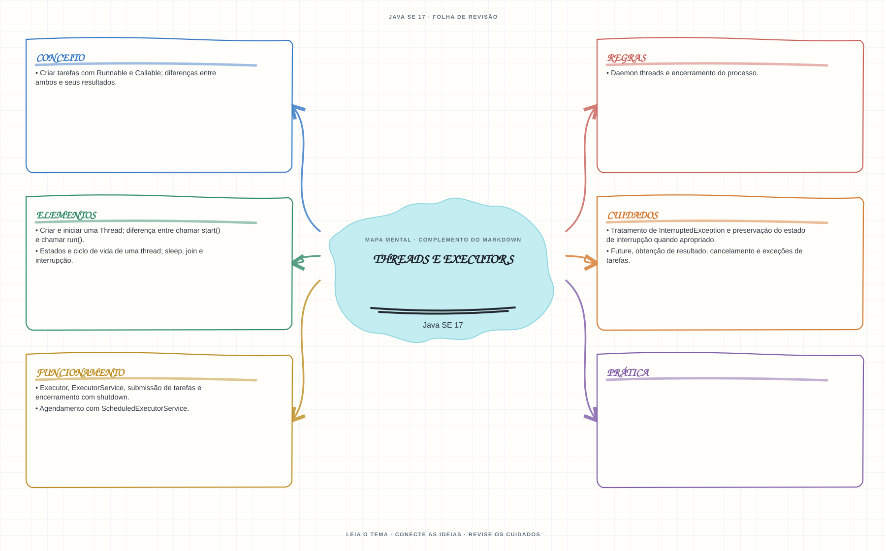

Ver mapa mental deste assuntoDistinguir criação de threads, execução de tarefas, resultados futuros e encerramento de executors.
Aprofundamento e revisão 1Z0-829: use esta página depois dos fundamentos. Os tópicos de prova complementam a trilha inicial e não são pré-requisitos para começar a programar.
- Leia o objetivo e localize a ideia principal no conteúdo abaixo.
- Preveja o resultado, compile e execute o exemplo.
- Faça a atividade sem copiar a solução e confira a checagem comentada.
EXEMPLO DE CONSOLE
Veja a regra em execução
Antes de executar, anote sua previsão. Compile o exemplo com o JDK e compare a saída observada com as regras deste assunto.
Comandos para compilar e executar
javac -d target/bin src/08-concorrencia/threads-e-executors/ThreadsEExecutorsExample.java
java -cp target/bin ThreadsEExecutorsExampleA execução imprime o resultado no console para você comparar com sua previsão.
Consultar código-fonte: ThreadsEExecutorsExample.java
import java.util.concurrent.ExecutorService;
import java.util.concurrent.ExecutionException;
import java.util.concurrent.Executors;
import java.util.concurrent.Future;
import java.util.concurrent.TimeUnit;
public class ThreadsEExecutorsExample {
public static void main(String[] args) throws InterruptedException, ExecutionException {
System.out.println("=== Threads, Callable, Future e ExecutorService ===");
ExecutorService executor = Executors.newFixedThreadPool(2);
try {
Future<Integer> primeiraTarefa = executor.submit(() -> {
System.out.println("Callable executada em " + Thread.currentThread().getName());
return 20;
});
Future<Integer> segundaTarefa = executor.submit(() -> 22);
int primeiroResultado = primeiraTarefa.get();
int segundoResultado = segundaTarefa.get();
System.out.println("Future.get() espera e devolve o resultado: "
+ primeiroResultado + " + " + segundoResultado + " = "
+ (primeiroResultado + segundoResultado));
} finally {
executor.shutdown();
if (!executor.awaitTermination(5, TimeUnit.SECONDS)) {
executor.shutdownNow();
}
}
}
}
PRATIQUE AGORA
Faça uma pequena alteração por conta própria
Submeta duas tarefas curtas a um ExecutorService, aguarde os resultados e encerre o executor.
Concluído quando: o programa compilar, produzir o resultado esperado e você conseguir explicar a regra aplicada.
CHECAGEM RÁPIDA · Threads e executors
Qual é a diferença entre chamar start() e chamar run() diretamente?
Conferir resposta comentada
start() agenda a execução em uma nova thread; uma chamada direta a run() é apenas uma chamada de método na thread atual.
Estude
- Criar tarefas com
RunnableeCallable; diferenças entre ambos e seus resultados. - Criar e iniciar uma
Thread; diferença entre chamarstart()e chamarrun(). - Estados e ciclo de vida de uma thread;
sleep,joine interrupção. - Tratamento de
InterruptedExceptione preservação do estado de interrupção quando apropriado. Executor,ExecutorService, submissão de tarefas e encerramento comshutdown.Future, obtenção de resultado, cancelamento e exceções de tarefas.- Agendamento com
ScheduledExecutorService. - Daemon threads e encerramento do processo.
Prática
Submeta tarefas que retornam valores, aguarde os resultados e encerre o executor. Explique o comportamento se uma tarefa falhar.
Como este capítulo se relaciona com cada exame
Fundamentos reaproveitáveis; confira APIs disponíveis e objetivos de Java 8.
Base de estudo deste portal; confirme o mapeamento com o blueprint vigente.
Conceitos úteis; revise virtual threads e APIs Java 21 aplicáveis.
Orientação editorial sobre reaproveitamento do material; não representa objetivos oficiais nem garante cobertura do exame. Consulte o comparativo e as fontes da Oracle.